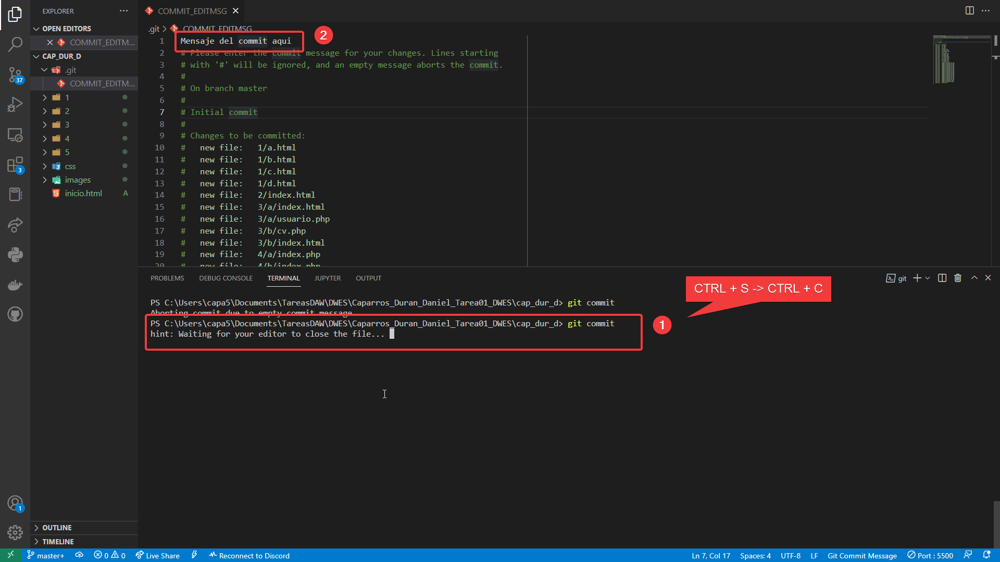

Como crear un repositorio un GitHub
En este tutorial veremos a como inicializar un repositorio con git y a subirlo a GitHub.
El proyecto que usaremos será este mismo paquete de actividades así que sin más que decir, comencemos.
Asumiremos que ya tenemos Git instalado en nuestro equipo listo para utilizar para no alargar demasiado el tutorial
y lo primero que deberemos de hacer será abrir una terminal en el proyecto que vamos a inicializar, yo en mi caso
como uso Visual Studio Code utilizo la PowerShell en vez de la terminal pero los resultados deben ser los mismos.
Primero comprobaremos que definitivamente tenemos instalado git usando git version
Luego será el momento de inicializar el repositorio, inicializar el repositorio significa que crearemos un repositorio local para ese
proyecto, normalmente esto creará una carpeta .git en nuestro proyecto que no deberemos de modificar a no ser que sepamos que estamos haciendo
para inicializar el proyecto usaremos el comando git init
En la imagen superior podemos ver como las carpetas y ficheros del explorador del IDE se ponen de un color verde, mostrando que todos son archivos Untracked
Para poder trabajar con ellos, primero tendremos que añadirlos al stash, la mayoría de IDEs hacen este proceso automaticamente pero como nosotros
lo estamos haciendo manualmente por consola tendremos que usar el comando git add ./
Una vez hayamos añadido los archivos al stash podremos realizar un commit, un punto en el tiempo con los cambios de esos ficheros.
Para ello usaremos el comando git commit
Cuando pongamos el comando se nos abrirá un editor de texto ya sea en una aplicación o en la propia terminal. Deberemos de escribir
en la linea superior el mensaje de nuestro commit y guardar el archivo. Cuando lo hayamos guardado volvemos a la terminal y pulsamos CTRL + C

Ahora debemos de crear el repositoriode github donde vamos a alojar nuestro código, para ello nos iremos a GitHub -> Repositorios
y clickaremos en New Repository
Se nos abrirá un formulario en el que tendremos que poner información básica del proyecto, como su nombre y una descripción opcional junto
con otras opciones opcionales.
Cuando hayamos guardado los cambios se nos abrirá el repositorio que acabamos de crear, tendremos que copiar la URL del repositorio
pues es lo que enlazará el repositorio remoto con el local
Ahora, volvemos de nuevo a la terminal donde deberemos de enlazar los repositorios, para ello colocamos el comando git remote add git <url>
y aunque normalmente no nos pediría loguearnos con otros servidores GitHub si nos obliga por lo que deberemos de loguearnos con nuestro usuario de GitHub
Cuando nos hayamos logueado con GitHub veremos que se nos añade el servidor remoto
Finalmente para finalizar debemos utilizar el comando git push git master que subira los cambios que han ocurrido en nuestro repositorio
local a la rama "master" que se encuentra en el servidor remote que hemos llamado "git"